How much have I covered?
The original platform did not clearly show completed coverage, making it difficult to identify what remained.
Coverage → Learning dataACE THE EXAM / PRODUCT DESIGN CASE STUDY
Redesigning the ACE the Exam study platform.
Helping learners understand their progress and plan their next practice session.
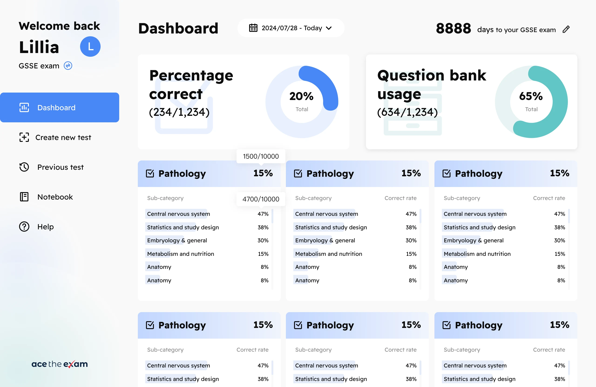
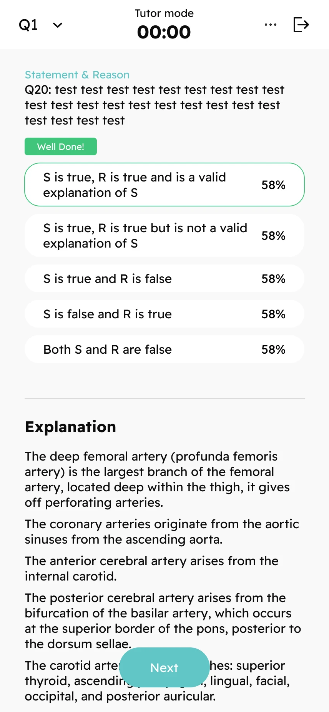
Product structure · Information architecture
Interaction design · Visual design
Product definition with the founder
Implementation with a development partner
2022–present
Remote / Part-time
Web learning platform · Mobile web
Brand website · Blog
Project context
ACE serves doctors and other medical professionals in New Zealand, as well as medical students. When I joined, the platform had validated demand for a paid question bank and offered basic question selection and practice creation. Learners struggled to track their progress and return to questions they had answered incorrectly or wanted to revisit.
Learners need to know what they have already practised before deciding what to study next.
The session setup shows coverage alongside topic selection, with controls for question count and status.
The founder and I brought together interviews, support records and ongoing feedback to guide our discussions about features.
The original platform did not clearly show completed coverage, making it difficult to identify what remained.
Coverage → Learning dataWithout subject-level performance data, learners largely relied on their own judgement when choosing what to review.
Performance → Subject-based practicePreviously missed questions and personal review priorities were difficult to find again.
Incorrect answers + Saved questions → ReviewUser profile / Persona
This profile summarises a core use case identified during the project. The platform also serves medical students; this case study focuses on the needs of working professionals preparing for exams.
Studies during available breaks, uses a computer for longer sessions and also accesses questions through a mobile browser.
Needs to know which subjects have been covered and which questions deserve another look. Before the exam, wants to practise answering within a time limit.
The question bank is extensive, but learners cannot easily recall everything they have practised or locate questions they need to revisit.
Show coverage and answer history, offer incorrect-answer filtering and personal bookmarks, and adapt the reading order for mobile screens.
Product structure
New users arrive at session setup because they have no answer history yet. Once they have accumulated data, the dashboard becomes the default, giving them context for choosing their next session. I mapped these page relationships and worked with the founder to prioritise features.
Question count, subjects and status
Tutor or test mode
Explanations, results and bookmarks
Use learning data to inform the next session
Learners currently return to the question bank to create their next session. Automated recommendations are not yet available.
Study experience / Session setup
For example, a learner who wants to revisit incorrect answers in one subject can select that subject, choose Incorrect and set a question count. I brought these controls together and placed coverage information beside each subject for reference.
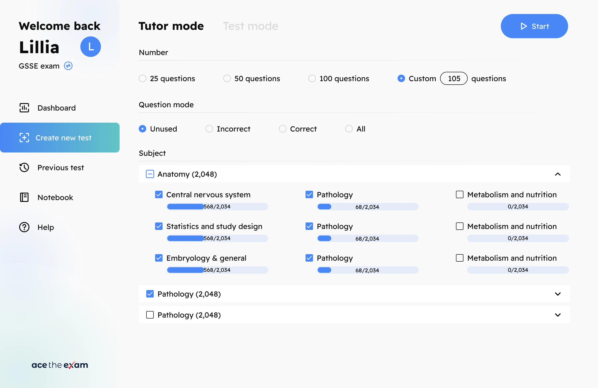
Learners can choose a preset or enter their own question count.
Incorrect updates with the latest answer: a correct answer removes the question; a later incorrect answer adds it again.
Subject selection includes the proportion of questions already attempted.
This design export includes options from development. Marked and Omitted were not included in the final release.
Study experience / Feedback timing
During everyday study, learners can view an explanation after answering each question. Exam practice requires timed answers with explanations held until the end. Both modes are selected during session setup; the main differences are the time limit and when explanations appear.
Answer→Read explanation→Next question
Timed answers→Submit→Review together
Tutor mode has no time limit and provides explanations question by question. I wanted this approach to support understanding and reduce the pressure associated with getting an answer wrong.
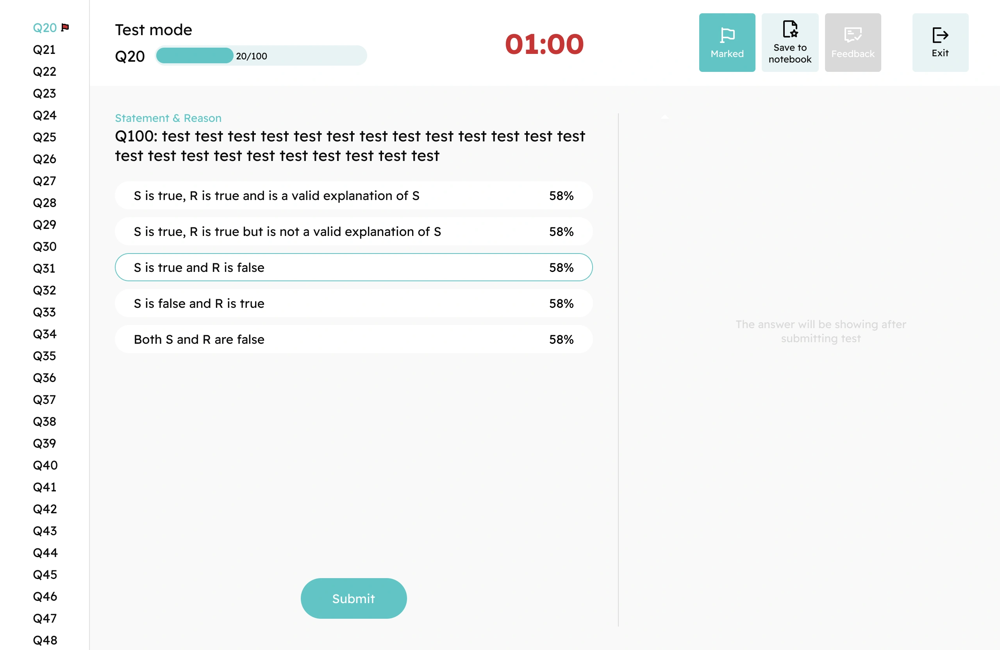
Option percentages are sample data. This feedback feature was added after the initial release.
Study experience / Review and data
Learners may answer correctly and still want to revisit the reasoning. Alongside filtering incorrect answers, Notebook lets them save questions for later regardless of their current answer status.
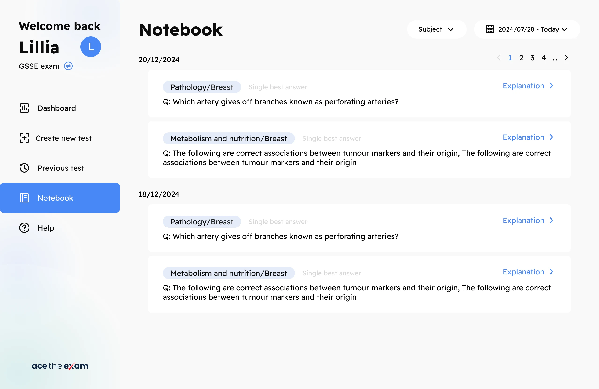
Incorrect answer → Added to review → Removed after a correct answer
Worth revisiting → Bookmark → Review later
The results page shows the current session, while the dashboard provides a cumulative view. Learners can refer to both when choosing further practice.
Unique questions attempted ÷ Total questions
Helps identify material not yet coveredAccuracy calculated across all answer records
Provides context for selecting subjects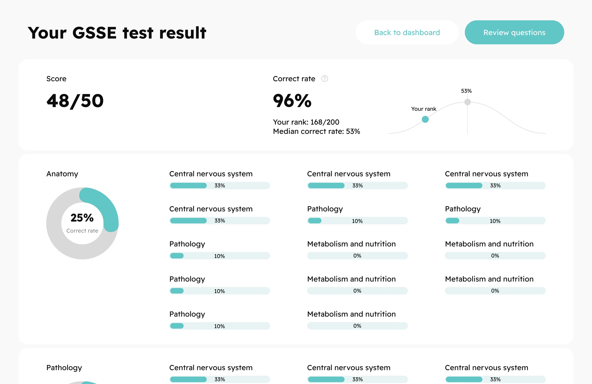
Responsive design
Working learners also study in short breaks and access the platform on their phones. Desktop screens place questions and explanations side by side. On mobile, I placed explanations below the options so learners could scroll through them. I also defined responsive rules and worked with the developer to check implementation across screen sizes.
Explanations follow the options on mobile,
with vertical scrolling for review.
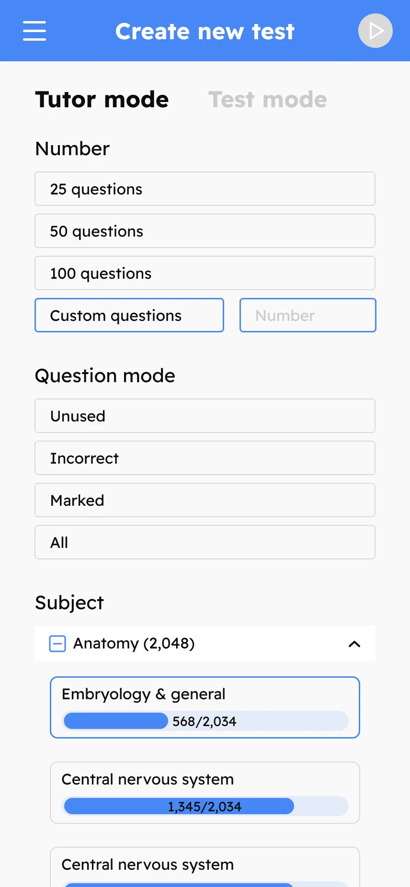
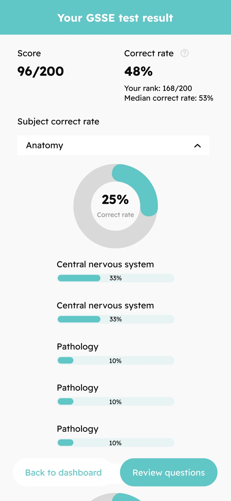
Original design exports are shown here; some text and figures are placeholders.
Ongoing iteration
After launch, users asked how many other people had selected the same answer. In a later release, we added the percentage choosing each option, shown when users view the explanation.
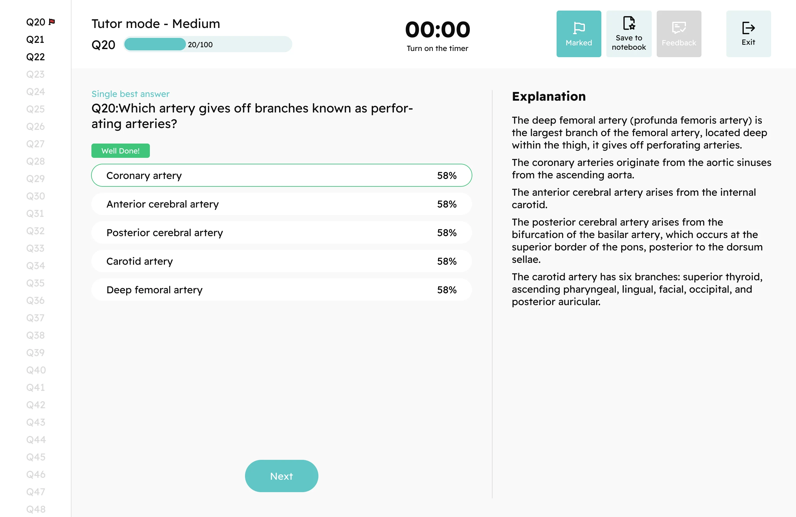
We intended this feature to make practice feel more interactive. Its effect on retention has not been measured separately.
Brand website / Released around 2026
The founder felt the original website looked dated and wanted a more distinctive identity. My work focused on visual design and animation, bringing product screens forward on the homepage and carrying over the learning platform’s blue and teal colours. The aim was to help first-time visitors understand the product more readily.
Blue as the primary brand colour
Teal to distinguish supporting content
A clearer hierarchy for headings and screens
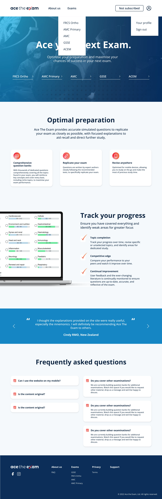
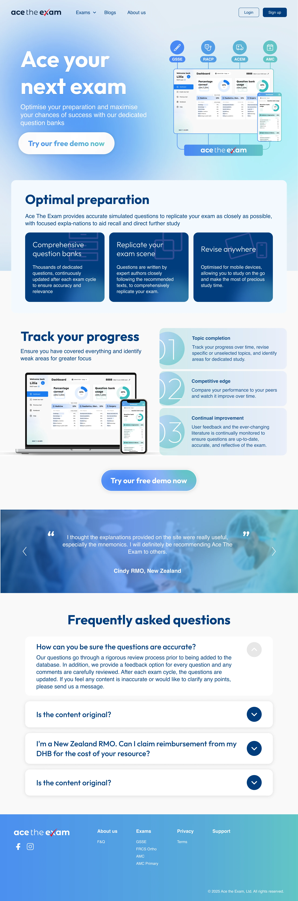
The new hero combines desktop and mobile product screens. Headings, backgrounds and buttons use a consistent blue and teal palette.
The operations team needed a place to publish content, so we added a blog. I designed the list and article pages to provide a consistent visual experience when browsing and reading.
Blog / Editorial experience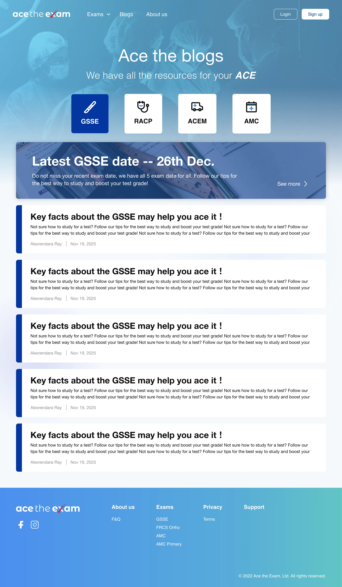
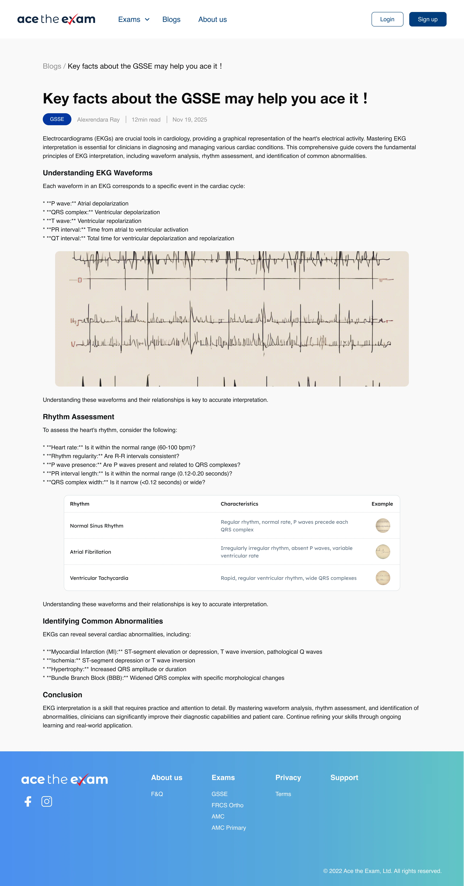
Static design exports are used here; the original website animations are not reproduced.
Outcomes and reflection
Backend records showed approximately 15% growth in total registered users over the six months following launch, compared with the pre-launch total. Marketing activity ran alongside the release, so the growth reflects both product and operational work.
Feature definition, product structure, information architecture and UI/UX.
Practice modes, learning data, bookmarks and review flows.
Brand visuals, animation and blog pages.
Future work may use forgetting-curve principles to recommend questions for review and help schedule preparation around the learner’s exam date. This is not yet implemented. The recommendation rules and feasibility of following the plan still need investigation.